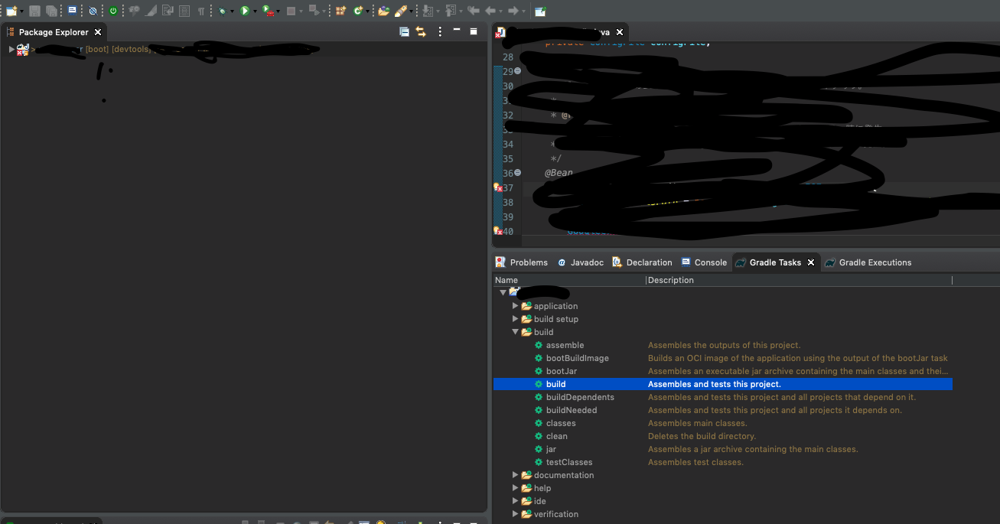
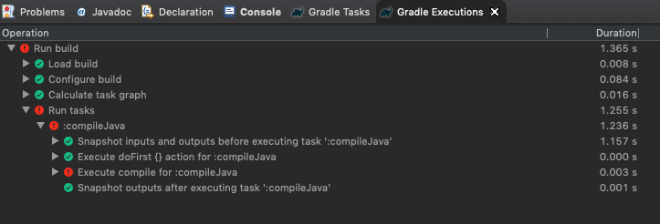
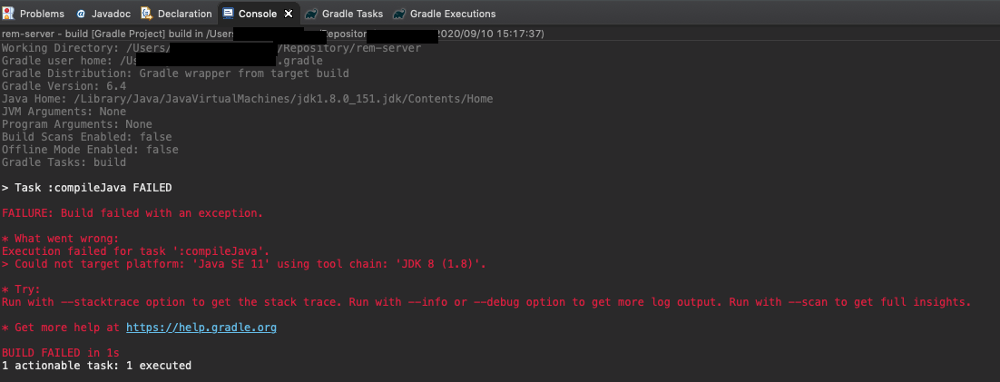
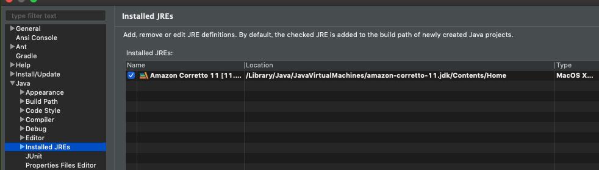
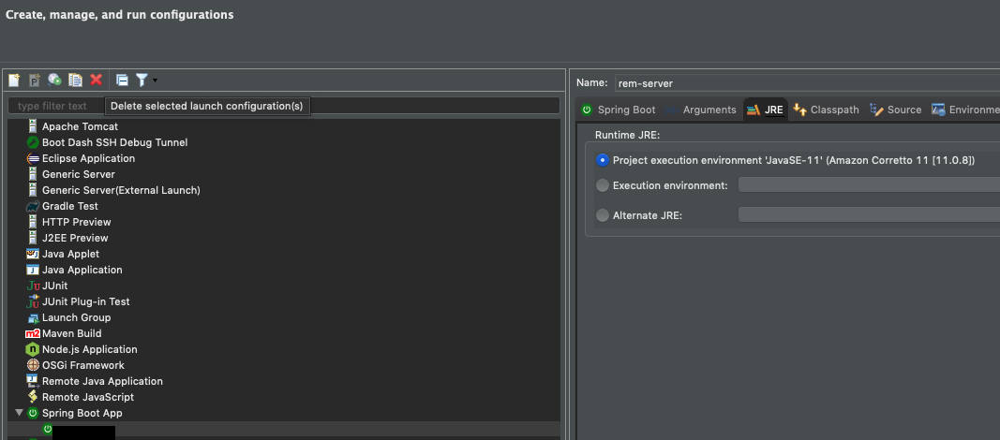
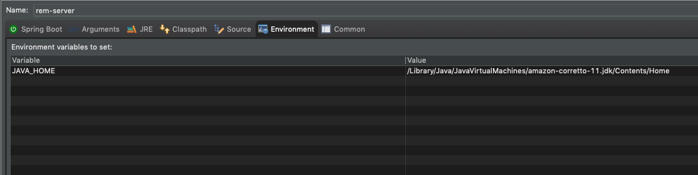
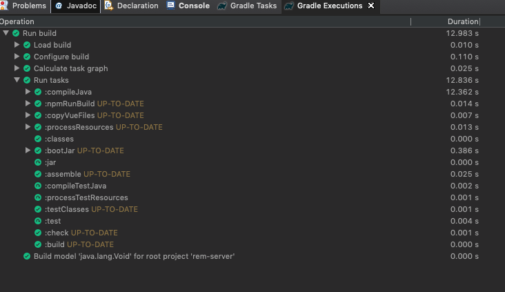

Java Home: /Library/Java/JavaVirtualMachines/jdk1.8.0_151.jdk/Contents/Home> Could not target platform: 'Java SE 11' using tool chain: 'JDK 8 (1.8)'.💢💢😡💢💢 ❗❓❓

Spring Tool Suite 4 > Preferences
😩❌

プロジェクト名を右クリック > Debug As > Debug Configurations...Spring Boot App > プロジェクト名JRE > Project execution environment
😢❌

同 > Environment > Environment variables to setJAVA_HOME
❌❌😡❌❌
🤔 oO(……）
$ cd プロジェクト
$ ls -a
. .git .mvn ...
.. .gradle .settings ....settings 👈 ❓
$ cat .settings/org.eclipse.buildship.core.prefs
...
java.home=/Library/Java/JavaVirtualMachines/jdk1.8.0_151.jdk/Contents/Home
...😦❗
java.home=/Library/Java/JavaVirtualMachines/jdk1.8.0_151.jdk/Contents/Home↓
java.home=/Library/Java/JavaVirtualMachines/amazon-corretto-11.jdk/Contents/Home😒 ……
again
……！

Working Directory: /Users/xxxxxx/Repository/rem-server
Gradle user home: /Users/xxxxxx/.gradle
...
Java Home: /Library/Java/JavaVirtualMachines/amazon-corretto-11.jdk/Contents/Home
...
BUILD SUCCESSFUL in 13s
5 actionable tasks: 1 executed, 4 up-to-date👌✨
……
🔥🔥 😬😬😬😬😬 🔥🔥
🙌
この記事はこちらから修正リクエストを送ることができます。
Spring Tool Suite 4でorg.eclipse.buildship.core.prefsのせいでJAVA_HOMEが設定できなかった - github
ゴミ箱ボタンの左にある、鉛筆ボタンを押してね！